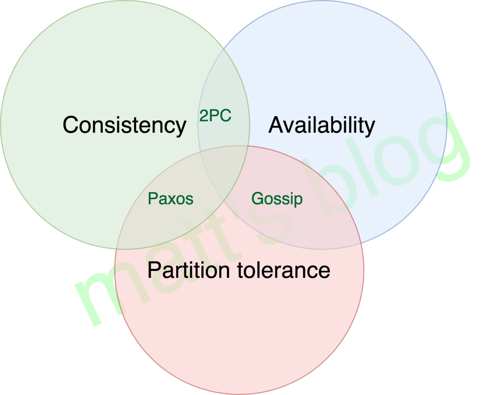

这个是写给组内成员的分布式知识简单分享
什么是分布式
什么是集群? 什么是分布式?
集群: 一个任务多个人可以做(实际是一个人做), 集群的主要目的是高可用, 通过冗余解决单点故障问题
分布式: 一个任务拆分成多个部分由多个机器来做, 解决业务解耦, 水平扩展和性能问题
几个典型的分布式系统:
| 名称 | 类型 | 数据分布方式 | 故障转移 | 底层存储 | 节点类型 |
|---|---|---|---|---|---|
| kafka | 消息系统 | broker->partition | partition选举 | file | 对等节点 |
| redis | 缓存 | instance->shard | sentinal选举 | memeory | 对等节点 |
| es | 搜索服务 | node->shard | master选举和partition选举 | file | 对等节点 |
| Tidb | 数据库 | TiDB+TiKV+PD | node选举 | file | 非对等节点 |
| hdfs | 文件系统 | namenode+datanode | 主从 | file | 非对等节点 |
节点类型：对等节点是说节点之间功能相似，非对等节点是说节点之间功能不同，无法互相取代
分布式要解决的常见问题
分布式要满足三个特性之二 CAP(C:一致性, P:分区容忍性, A:可用性)
- 一致性（C）：在分布式系统中的所有数据备份，在同一时刻是否同样的值。（等同于所有节点访问同一份最新的数据副本），换句话就是说，任何时刻，所用的应用程序都能访问得到相同的数据。
- 可用性（A）：在集群中一部分节点故障后，集群整体是否还能响应客户端的读写请求。（对数据更新具备高可用性），换句话就是说，任何时候，任何应用程序都可以读写数据。
- 分区容错性（P）：以实际效果而言，分区相当于对通信的时限要求。系统如果不能在时限内达成数据一致性，就意味着发生了分区的情况，必须就当前操作在C和A之间做出选择，换句话说，系统可以跨网络分区线性的伸缩和扩展。
CAP三个特性不可能同时满足, 只能同时满足两个特性
对大多数的分布式应用来说 CAP中的 P 是必不可少的
所以我们一般都会从CA中选取一个, 一般会选择CP 或者 AP
具体处理cap协议的方法如下图

如何解决分区容忍性
解决分区容忍性问题首先就是对数据进行分区或者叫分片
分区手段有很多, 但大多分两种, hash分区和线性分区
系统将数据分为逻辑上的几个区块, 每个区块可以在多个机器上进行自由的部署和移动
这样就做到了将数据和机器进行隔离, 可以以分片为单位在不同机器上进行数据的移动和备份
但是这样在使用数据的时候就需要从多个分片同时获取数据进行合并
如果因为某些原因， 导致某些分片所在的节点出现故障， 此时我们就认为出现了网络分区，
分区容忍性要求在此种状况下，系统依然能对外提供有效服务
Gossip
使用者: Redis
Gossip协议是节点将自己的数据通知给集群内所有节点的协议, 但是不能做到数据一致性
Gossip只能保证可用性和分区容忍性
如果对数据的分片进行备份, 同时将备份分布到多个不同的网络节点上, 这样即便部分数据分区不可用, 在可容忍的范围内只要不是该分区的所有数据分片都出问题, 还是能提供正常的数据服务
数据分片是分布式存储的基础, 数据分片好处很多
- 对数据分片可以使数据不受单机存储制约
- 对数据分片可以通过多分区共同协作并行处理提高性能
- 对分区数据进行冗余可以提高系统可用性
但是数据分片和副本会带来一致性问题
如何保证数据一致性
单节点的数据一致性
单节点如何保证数据一致性和完整性
比如: 数据库索引的更新, B树在分裂过程中出现问题怎么办,
一般处理单节点的一致性可以用 WAL(预写日志,或者叫redo日志) 或者 写时复制(copy on write)
WAL就是先把操作追加到一个日志文件, 然后再对内存进行操作, lsm树中的memtable就是典型的使用这种方案
写时复制就是先在其他地方把数据处理完毕, 最后直接修改数据引用, gfs的快照技术有使用类似的方案
典型的例子是 修改B+树时预先生成一个小的B+树, 然后直接替换B+树上的节点指针
分布式的一致性
主从一致性
目前业界的普遍做法是将分区的多个副本形成一个小组, 组内选举一个primary副本来执行写操作或确定写入顺序, 其他副本仅提供读操作或根本只提供备份功能, 这样对外部系统只有一个主副本做写入操作, 就可以保证数据写入的一致性
如何从多个副本集合中选举主副本就涉及到共识算法（选主算法），常见的共识算法有 Paxos,Raft,Zab协议,Bully 等
NRW算法
NRW是一种特殊的保障一致性的算法, 通过饱和读取策略充分保证数据读取的一致性，具体详情如下:
R(读取分片数) + W(写入分片数) > N(节点总分片数)只要满足以上公式, 我们必然可以拿到一个正确分片的数据
举例: 我们对某个数据有5个分片, 我们只要保证 写入分片为3,读取分片为3,这样,我们必然可以保证读取的分片其中有一个含有最新的数据
如何处理可用性
实现高可用一般都是通过节点或数据备份来实现, 采用主从或主备节点, 主节点或主分片不可用, 就采用副本分片或备份节点替代原有的服务
分布式事务
解决分布式事物要处理ACID 四个问题，常用如下方式
- 2PC, 使用者: mysql, 两阶段提交协议
- 3PC, 三阶段提交协议, 二阶段提交协议的优化
- TCC 事务补偿
使用经验
如何设置合理的分区和副本数量
- 其实对于副本数量的设置一般取决于副本的用途
如果你副本只做备份，不对外提供读取服务，那设置3个是比较理想的情况，因为3个副本足以覆盖副本所有的可能状态（可用，不可用，升级中），也就是说只要有3个副本， 就一定有一个副本处于可用状态
如果副本同时提供读功能， 那可以酌情增加副本数量
- 分片的设置
其实针对不同的系统，不通的分片方式，分片设置有各自的考虑，不过一般受以下因素影响
- 数据量
- 分布节点数量
- 使用者数量
- 数据同步和网络开销